install.packages("lubridate")Packages, lubridate & ggplot2
This session first covers R packages and how to install and use them. We then look at two specific packages in more detail: lubridate (for managing datetimes) and ggplot2 (a plot alternative).
Packages
Packages are extensions of R. Most R packages add additional functions you can use as you have used the base R functions until now - but first, a package needs to be installed and loaded.
When installing a package, it is downloaded and installed from a repository. The most important repository for R packages is the Comprehensive R Archive Network (CRAN; https://cran.r-project.org/). Packages from CRAN can be installed using the function install.packages() and the name of the package.
In our case, we want to install the lubridate package. Lubridate is a package for date-time management. While date-time data can also be parsed with base R (not covered in this class), lubridate is much simpler to use. lubridate is available on CRAN, so we can install it like this:
Packages are installed permanently on your computer, so you only need to do this step once.
To use the functions from a package, you need to then load the package using the library() function.
library("lubridate")Warning: Paket 'lubridate' wurde unter R Version 4.4.3 erstellt
Attache Paket: 'lubridate'Die folgenden Objekte sind maskiert von 'package:base':
date, intersect, setdiff, unionWe can then use functions from the lubridate library. For example, we can use dmy() to convert a character string into a date object - more on this conversion in the next section - and then use wday() to discover what day of the week it is.
# Creating a date object
new_year <- dmy("01.01.2000")
str(new_year) Date[1:1], format: "2000-01-01"# Discovering the day of the week
wday(new_year, label = T)[1] Sa
Levels: So < Mo < Di < Mi < Do < Fr < Sa
Note
Unlike installing, you need to load your packages again every time you restart R. It is recommended to load all packages you will use in an R script at the top of the script.
Sometimes, we don’t want to load an entire package or we may have package conflicts - meaning multiple packages contain functions of the same name. When I imported lubridate, there was for example a warning that some functions from base R are “masked”. This is because lubridate contains functions with the same name, and if I now simply call the function date(), R will prefer the lubridate version.
Instead of loading a package, I can also use package_name::function_name. (I can also use this to specify which package’s function I want to use if names overlap. Even with lubridate loaded, base::date() will use the base R date function!)
# print day of year
lubridate::yday(new_year)[1] 1Dates & Time with Lubridate
Timeseries data is very common in ecosystem sciences - and if you are studying Ecosystem Sciences or Ecosystem Analysis and Modeling you will need to deal with them in the first semester. In that class, you will use the lubridate package to manage datetimes.
Let’s take a look at some example data: the file weather_goettingen.csv contains hourly weather data for August 2026 (source: Lufthygienisches Überwachungssystem Niedersachsen).
weather <- read.csv("data/weather_goettingen.csv")
str(weather)'data.frame': 744 obs. of 8 variables:
$ Time : chr "01.08.2026 01:00" "01.08.2026 02:00" "01.08.2026 03:00" "01.08.2026 04:00" ...
$ PM10 : num 24.9 25 24.9 24.6 24.3 ...
$ Temperature : num 21.3 20.3 19.2 17.9 17 ...
$ Pressure : num 993 993 994 994 994 ...
$ Windspeed : num 0.35 0.52 0.63 0.6 0.46 0.34 0.39 0.52 0.48 0.61 ...
$ Humidity : num 75.9 82.6 86.6 88.1 90 91 87.9 84.3 81.5 75.8 ...
$ RainDuration: int 0 1 0 7 5 0 0 0 0 0 ...
$ Radiation : num 0 0 0 0 0 ...We can see that the Time column was read in as a character. If we want to create a simple line plot of temperature over time, we can see that R shows warnings and the plot remains empty because characters cannot be plotted on a continuous axis.
plot(weather$Temperature ~ weather$Time, type = "l")Warning in xy.coords(x, y, xlabel, ylabel, log): NAs durch Umwandlung erzeugtWarning in min(x): kein nicht-fehlendes Argument für min; gebe Inf zurückWarning in max(x): kein nicht-fehlendes Argument für max; gebe -Inf zurück
Error in plot.window(...): endliche 'xlim' Werte nötigWe therefore need to transform our Time column from a character to a date object. For this, we can use lubridate. Lubridate contains a variety of functions to transform characters into dates. Which function you use depends on the order of the date-time components. For example, the function ymd_hms() transform a timestamp in the form of “Year-Month-Day-Hour-Minute-Second” (with any seperating character, so Year:Month etc. would also work).
ymd_hms("2025/08/07 18:09:43")[1] "2025-08-07 18:09:43 UTC"We can transform other time stamps using similar functions. Not all components of the datetime need to be given, but missing values have defaults (e.g. if I only specify minutes and hours, it is assumed that seconds are zero). Lubridate is very flexible with its input and should be able to handle most date formats you encounter.
# hour minute
hm("12:31")[1] "12H 31M 0S"# month day year hour
mdy_h("08 01 2003 17")[1] "2003-08-01 17:00:00 UTC"# year + month (defaults to 1st of the month)
ym("2607")[1] "2026-07-01"# the time stamp can also be interrupted by random characters in between
# and still be parsed correctly
ymd_hms("20200107 qwdajdoa 08wd1932aow")[1] "2020-01-07 08:19:32 UTC"By default, all time stamps are in UTC. To transform our data’s time, we therefore should specify the time zone.
# using day-month-year hour-minute
weather$Time <- dmy_hm(weather$Time, tz = "CET")
# our Time column now has the right format
# POSIXct = datetime
str(weather)'data.frame': 744 obs. of 8 variables:
$ Time : POSIXct, format: "2026-08-01 01:00:00" "2026-08-01 02:00:00" ...
$ PM10 : num 24.9 25 24.9 24.6 24.3 ...
$ Temperature : num 21.3 20.3 19.2 17.9 17 ...
$ Pressure : num 993 993 994 994 994 ...
$ Windspeed : num 0.35 0.52 0.63 0.6 0.46 0.34 0.39 0.52 0.48 0.61 ...
$ Humidity : num 75.9 82.6 86.6 88.1 90 91 87.9 84.3 81.5 75.8 ...
$ RainDuration: int 0 1 0 7 5 0 0 0 0 0 ...
$ Radiation : num 0 0 0 0 0 ...We can now plot the time on the x axis.
plot(weather$Temperature ~ weather$Time, type = "l",
xlab = "Date", ylab = "Temperature [°C]")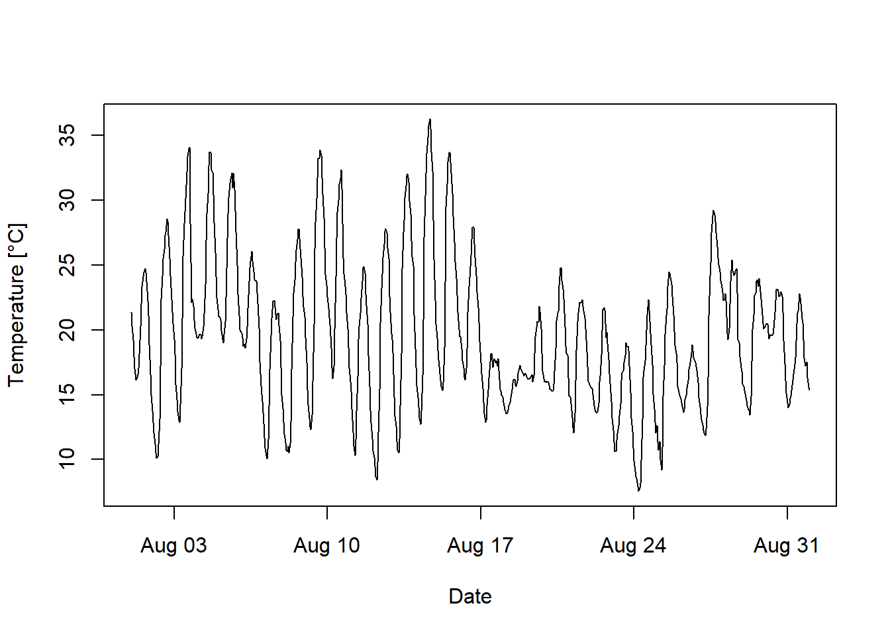
We can also use lubridate to extract elements (like the year, day of the week, or hour) from a datetime object.
# extract hour from the datetime object
weather$Hour <- hour(weather$Time)
# Create a scatterplot of temperature against time of day
plot(weather$Temperature ~ weather$Hour,
xlab = "Time of Day", ylab = "Temperature [°C]")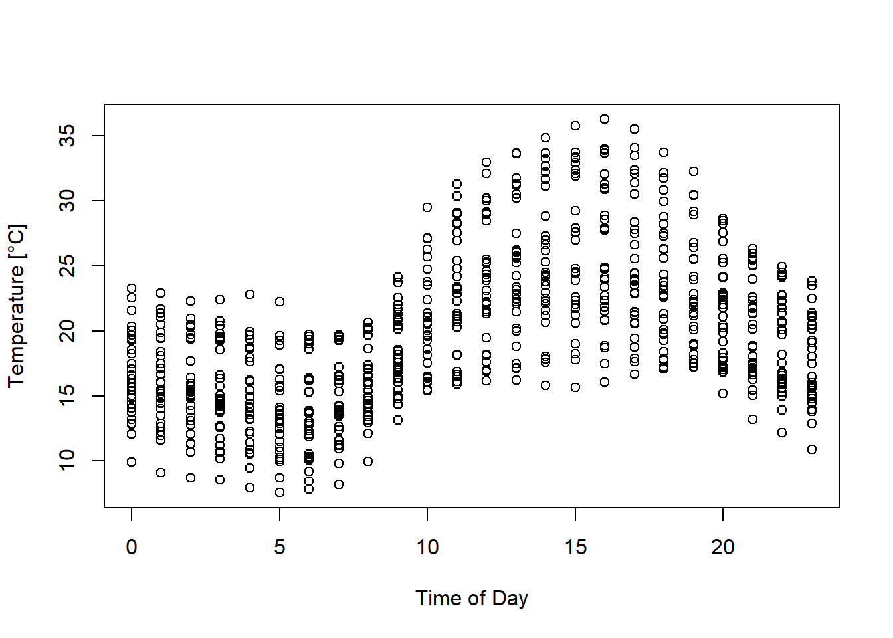
Plotting with ggplot2
The Basics
Ggplot2 is used for plotting, but with a different syntax than base R - which one you prefer is mostly a matter of preference! There is no right or wrong option, but this course introduces both so you can make your own choice.
To use ggplot2, we of course need to first install and load the package.
install.packages("ggplot2")library("ggplot2")Warning: Paket 'ggplot2' wurde unter R Version 4.4.3 erstelltFor this example, we will use the iris dataset again.
data(iris)
str(iris)'data.frame': 150 obs. of 5 variables:
$ Sepal.Length: num 5.1 4.9 4.7 4.6 5 5.4 4.6 5 4.4 4.9 ...
$ Sepal.Width : num 3.5 3 3.2 3.1 3.6 3.9 3.4 3.4 2.9 3.1 ...
$ Petal.Length: num 1.4 1.4 1.3 1.5 1.4 1.7 1.4 1.5 1.4 1.5 ...
$ Petal.Width : num 0.2 0.2 0.2 0.2 0.2 0.4 0.3 0.2 0.2 0.1 ...
$ Species : Factor w/ 3 levels "setosa","versicolor",..: 1 1 1 1 1 1 1 1 1 1 ...A ggplot is build up in parts. The first part is created with ggplot(). Inside, you specify the dataset you want to plot and what ggplot calls an “aesthetic mapping” - this means how you want to map variables (e.g. height and width) to visual aspects of the plot (most importantly the x and y axis, but also color or shape).
# creating base: data + mapping
# notice that x and y are specified WITHIN aes()
ggplot(data = iris, aes(x = Petal.Width, y = Petal.Length))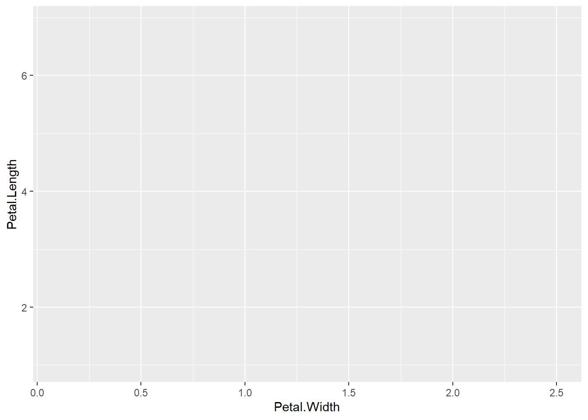
However, we can see that the resulting plot is empty. This is because we haven’t added a layer yet. Layers tell ggplot what to plot - points, lines, boxplots… The layer is always almost proceeded by geom_; for example, to add points, we use geom_point().
# Creating a scatter plot
ggplot(data = iris, aes(x = Petal.Width, y = Petal.Length)) +
geom_point()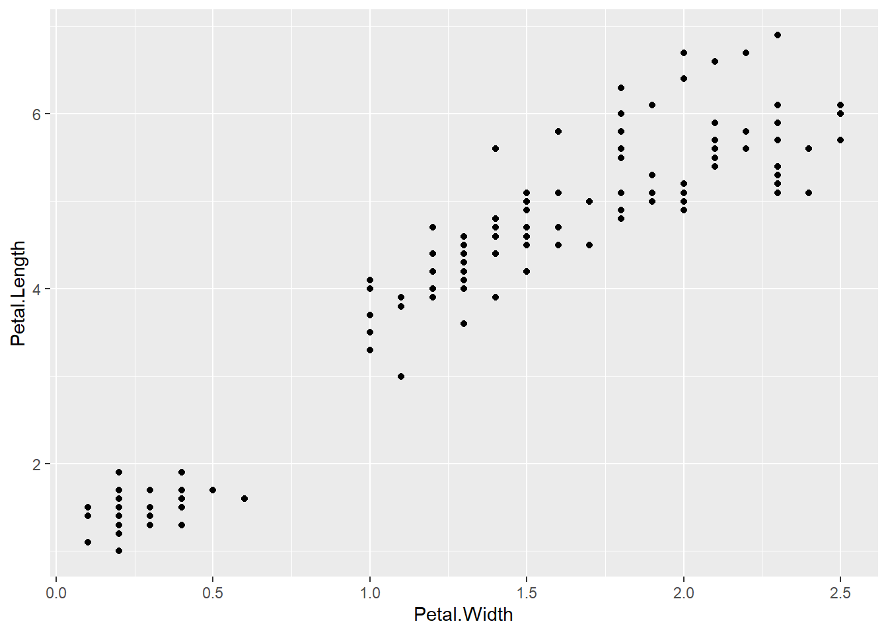
We can change the plots visuals (such as axes labels) by adding a labs() layer.
ggplot(data = iris, aes(x = Petal.Width, y = Petal.Length)) +
geom_point() +
labs(x = "Width [cm]", y = "Length [cm]")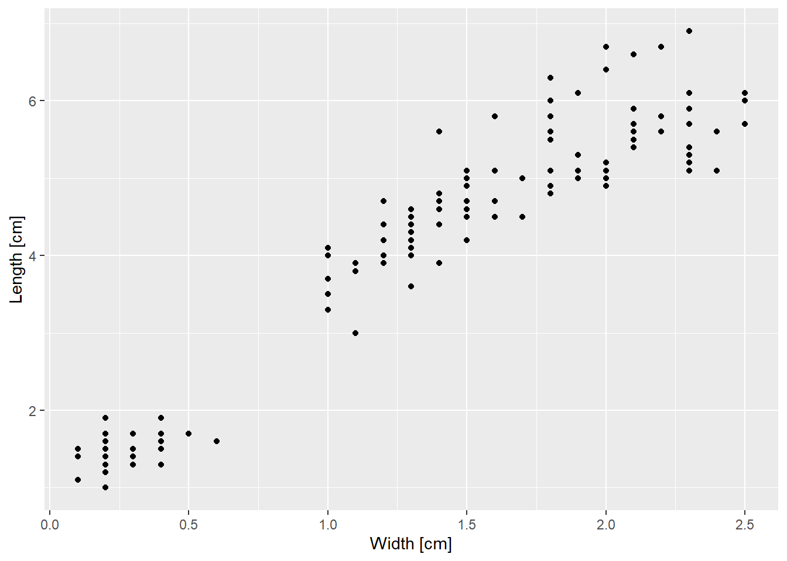
We can also add multiple layers to the same plot. For example, let’s add the geom_smooth() layer that overlays a function - in this case a linear function - fitting the data.
ggplot(data = iris, aes(x = Petal.Width, y = Petal.Length)) +
geom_point() +
geom_smooth(method = "lm") +
labs(x = "Width [cm]", y = "Length [cm]")`geom_smooth()` using formula = 'y ~ x'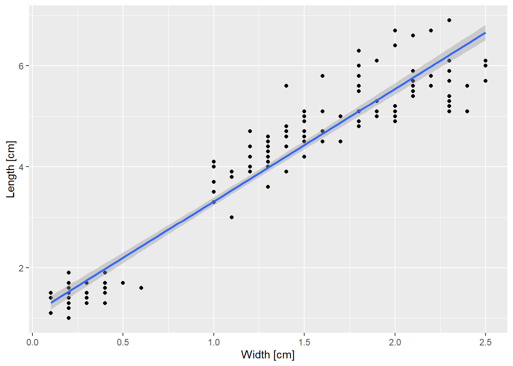
Important
geom_smooth() is nice for quick-and-dirty data visualization, but does not replace fitting your own regression model to the data (as covered in your statistics class in the first semester).
If you want to vary the color of your data points based on a variable, add the colour argument inside of aes().
ggplot(data = iris,
aes(x = Petal.Width, y = Petal.Length, colour = Species)) +
geom_point() +
geom_smooth(method = "lm")`geom_smooth()` using formula = 'y ~ x'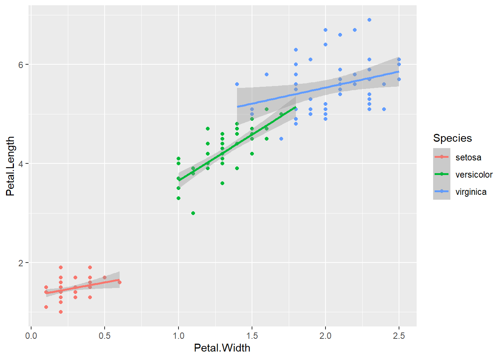
The specified colour now applies to all layers! You may not want this - in this case, you can also specify an aesthetic for each specific layer. For example, to only want to change the color of the points, add an aes(colour = Species) inside geom_point().
ggplot(data = iris, aes(x = Petal.Width, y = Petal.Length)) +
geom_point(aes(colour = Species)) +
geom_smooth(method = "lm")`geom_smooth()` using formula = 'y ~ x'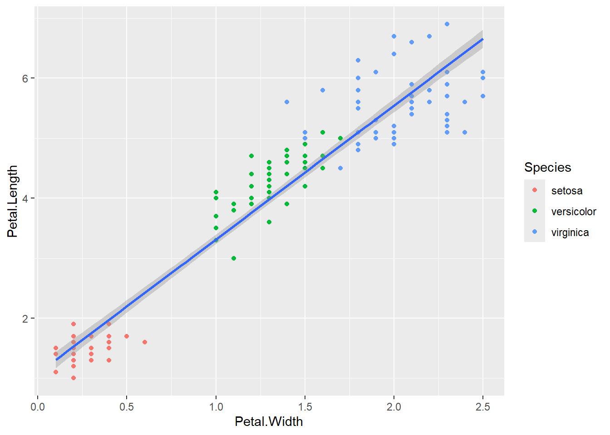
NoteWhen to (not) use aes()
You can also specify visual elements of a plot outside of the aes() brackets. Specify anything within aes() that you want to change based on a variable; change anything outside aes() that you want to be constant for all data points.
# In this plot, colour depends on species
# but the plotting character is "2" for all points
ggplot(iris, aes(x = Petal.Width, y = Petal.Length)) +
geom_point(aes(colour = Species), shape = 2)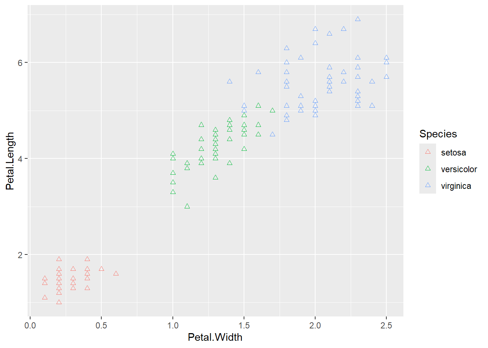
Different Types of Plots
To create a line plot, use geom_line(). For example:
ggplot(weather, aes(x = Time, y = Pressure)) +
geom_line(col = "blue") + # drawing a blue line
labs(x = "Date", y = "Pressure [hPa]")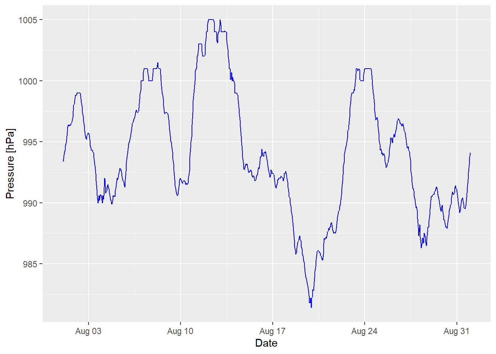
To create a boxplot, use geom_boxplot(). Remember that the categorical variable should be on the x axis and make sure that your x variable is a factor if the plot doesn’t look as expected.
ggplot(iris, aes(x = Species, y = Petal.Width)) +
geom_boxplot() +
labs(x = "Species", y = "Width [cm]")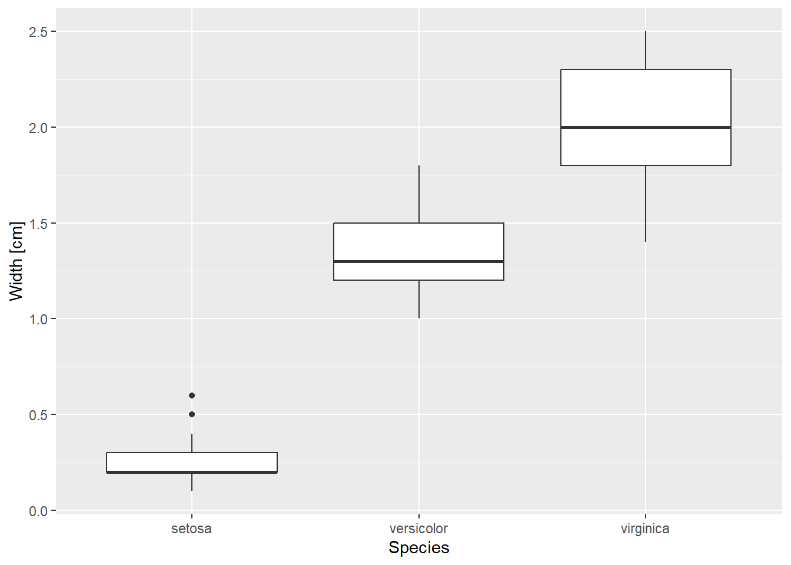
And, finally, to plot a histogram, use geom_histogram(). For this, you only need to specify the x variable.
ggplot(iris, aes(x = Petal.Length)) +
geom_histogram() +
labs(y = "Count", x = "Length [cm]")`stat_bin()` using `bins = 30`. Pick better value `binwidth`.
Saving Plots
To save a ggplot object, you can use the function ggsave(). By default, it saves the last plot you displayed. ggsave() can be used to save to all commonly used formats (pdf, png, jpeg, svg…). Like with base R plot saving, you give the path to your file relative to your current working directory.
ggplot(iris, aes(x = Petal.Length)) +
geom_histogram() +
labs(y = "Count", x = "Length [cm]")`stat_bin()` using `bins = 30`. Pick better value `binwidth`.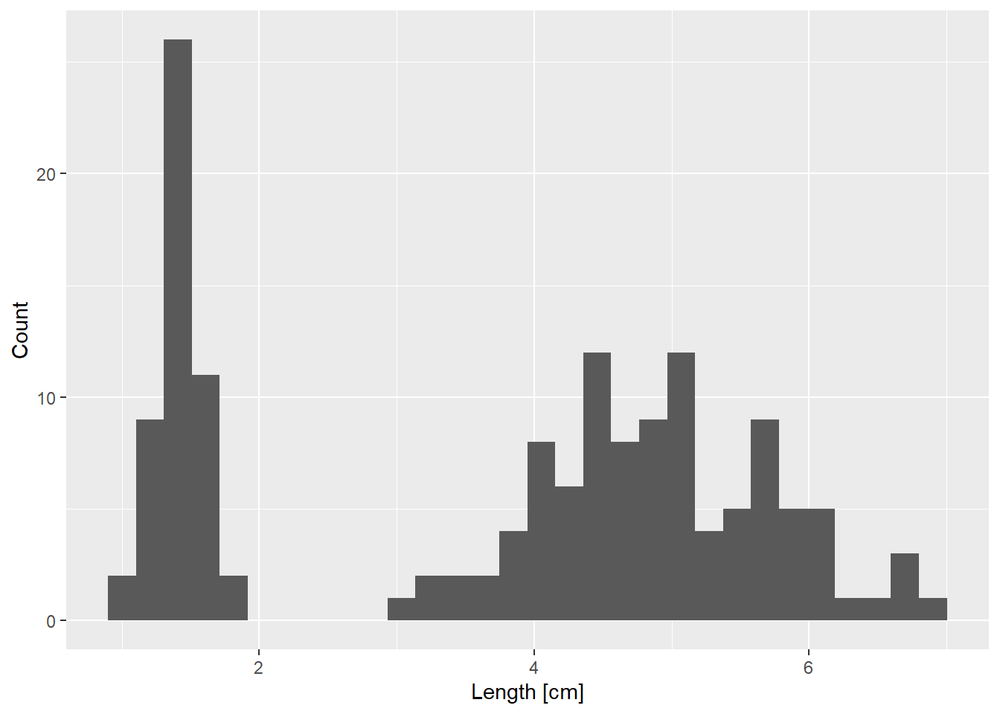
ggsave("histogram.png") # save histogram.png in root folderSaving 7 x 5 in image
`stat_bin()` using `bins = 30`. Pick better value `binwidth`.You can use the arguments units, width, and height to specify the dimensions of your saved plot. Units can be “in” (inches), “cm”, “mm”, or “px” (pixels).
# save histogram as 700 x 700 px object
ggsave("histogram_square.png", units = "px", width = 700, height = 700)`stat_bin()` using `bins = 30`. Pick better value `binwidth`.Advanced: Plot Themes
To adjust additional visual aspects of the plot, you can change the theme of the plot. This section introduces a few important ones; check ?ggplot2::theme for the whole list of possible arguments.
For example, you can adjust the position of the legend (by default to the right of the plot).
ggplot(iris, aes(x = Sepal.Width, y = Sepal.Length, col = Species)) +
geom_point() +
theme(legend.position = "bottom")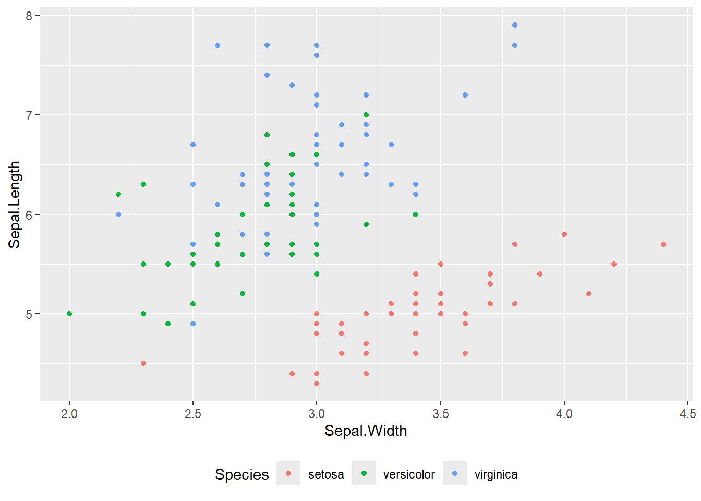
You can also change the size of the axes labels (and font family, color, etc.), which may be important to create readable figures. Note that
ggplot(iris, aes(x = Sepal.Width, y = Sepal.Length, col = Species)) +
geom_point() +
theme(axis.title = element_text(size = 16))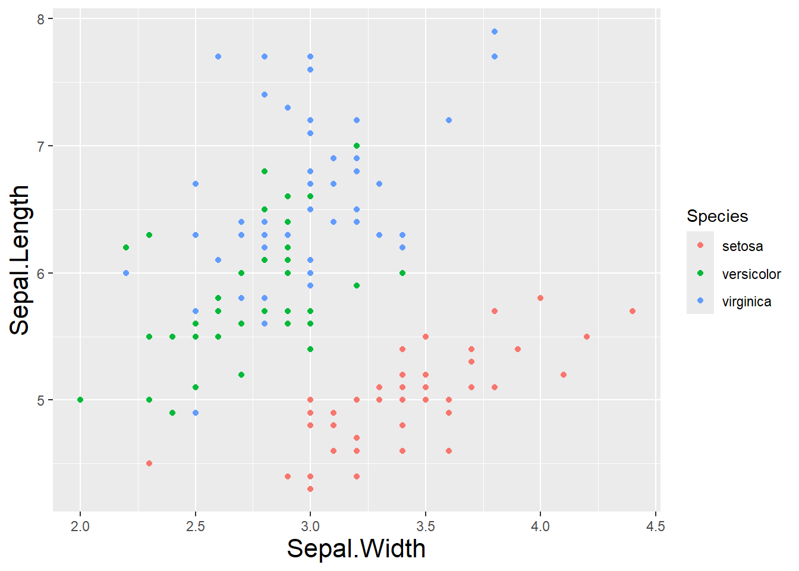